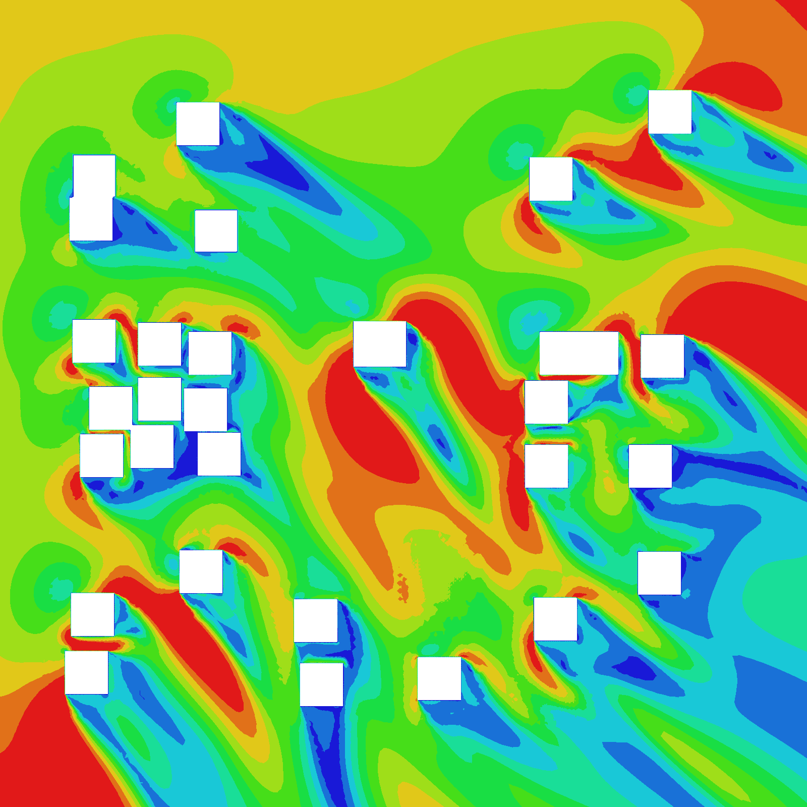

Each site would have different wind conditions. This refers to the prevailing wind speed and wind direction. A suitable boundary condition should be selected for study.
OpenFOAM is a fluid dynamics library. It imitates the interactions between air particles to produce wind flow patterns.

The results are mapped onto the air space around the 3D models. This becomes tricky to visualise as the focus is not just on the building itself. A good visualisation should allow users to pan and zoom.